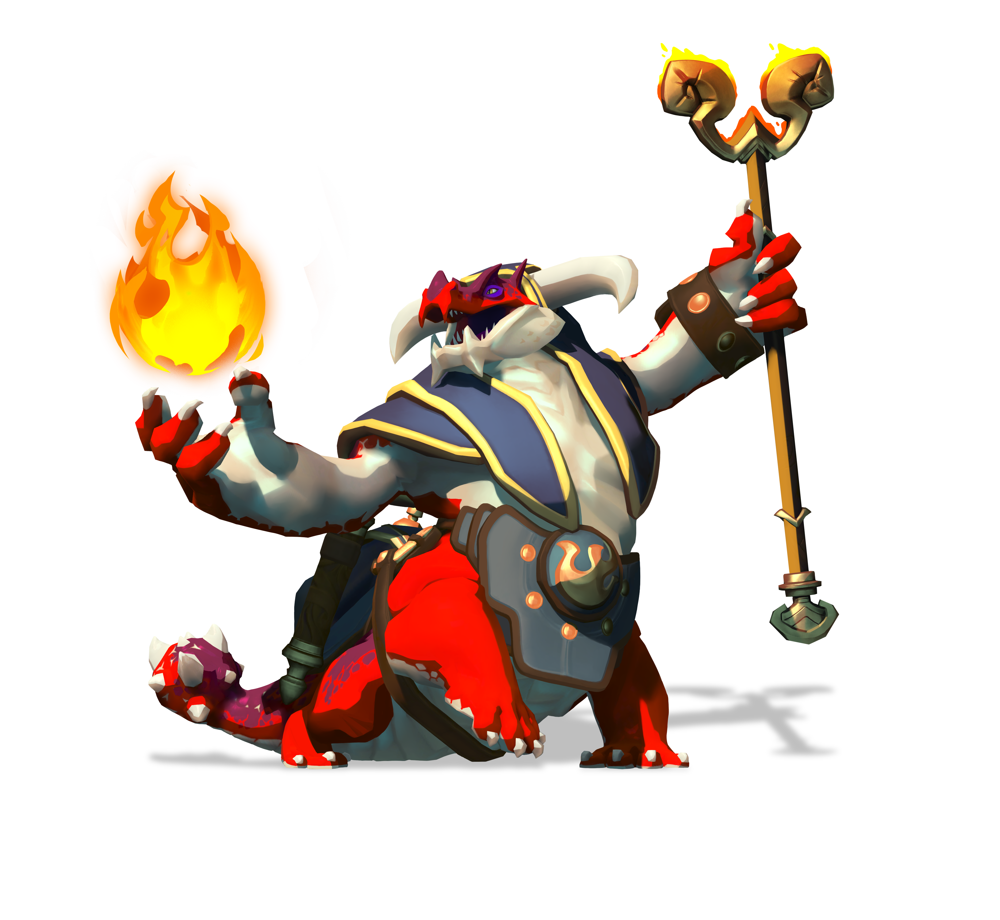

Scroll down to find out more about Charnok!

A brief summary on Charnok:
- Charnok is incredibly powerful, and this simply can't be overstated.
- Charnok is a shooter, and uses his specter to shoot out fiery ball's of flame at his openents.
- Charnok can easily take control of the battlefield by summoning meteors from the sky, using them to slow his enemies, as well as stun them.
- Charnok, like any other character based on fire, can breath fire for a varied amount of time, and has a kick to it.
- He can stun, or even, push enemies away with his firebreath, and this can be used to escape an attack, or to deal the one the crippling blow to the enemy.
- In addition to those abilities, Charnok can literally 'jump' away from enemies using his 'Detonate' ability.
- If upgraded to a certain path, it can even push away enemies, and make them fall to there doom.
- Charnok can carry an entire team if used properly, but keep in mind that he is a DPS dealer, not a tank.
- Try to avoid blows, as best as you can, because though he may have a realy high DPS, he can't survive for long if he is not healed.
- Even a well-coordinated team of two can easily take down Charnok if you're not paying attention.
- The more you play with Charnok, the better you get, with handling your roles.
-
For the drakkors, “altitude” became synonymous with “prestige.” They abandoned the lowlands entirely, constructing mountaintop towers in a ruinous “race to the sky.”
— Bronze Tomes of Storyteller Shao, Vol. 4
Links
We'll see you on the airship!!